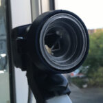

In this article, I want to discuss different types of satellite LNB, polarization, and depolarization of waves. Also, I’ll show how to rework the LNB.
Also, we will discuss a theory to figure out why this rework is working. The primary topic here is Ku-band LNB, but all this also works for the Ka-band and C-band.
Here in Europe, we have two major types of satellite LNB.
– Universal LNB with two LO for the full Ku-band (10.7 – 12.7 GHz), Linear polarization.
– Single LNB with single LO for the upper Ku-band (11.2 – 12.7 GHz), Circular polarization.
Typically Circular single LNBs are used by DTH providers and Linear universal LNBs are for FTA and everything else.
All LNBs are great for the ham-radio experiments due to output band 950 – 1750 MHz which is suitable for most SDRs.
In order to get full Ku bandwidth with Circular polarization, it’s possible to rework the Universal LNB.
Also, you may want to receive some DTH channels with Circular polarization, but only Universal LNBs are lying around 🙂
But before the actual rework, let’s review the theory…
Polarization of the waves
As we know, radio waves, light, gamma, x-rays, and so on are just a part of the electromagnetic spectrum with different wavelengths and energy. This means that some therms and laws can be used for radio and optics both. Sometimes it might be helpful.
An electromagnetic wave consists of synchronized oscillations of electric and magnetic fields. In free space, both components of the electromagnetic wave are properly described as transverse waves. This means that Electric (E) and Magnetic (H) oscillations are perpendicular to the direction of wave propagation (Z).

When both (E and H) vectors are in phase (zero amplitude happens at the same time) – we have Linear polarization. By convention, the “polarization” direction of an electromagnetic wave is given by its electric field vector. The vertical or Horizontal direction of the linear polarization is always relative to the plane of the wave source.
Typically radio antennas are emitting linear polarized waves. Let’s see how it happens.
{kind=link}
Imagine that we have some dipole antenna on a tower. This antenna is mounted vertically, relative to the ground. The transmitter causes an alternating electrical current in the antenna. Electrical current is just a moving charged particles, electrons in this case. Electrons are moving up and down (relative to the ground plane) producing vertically oscillating electric field. Finally, observers can receive vertically polarized signals with an appropriate antenna.
For the horizontal polarization, everything is the same, but the antenna is placed horizontally. Of course, everything is relative…
The main profit here is the ability to transmit different channels on the same frequency but with different polarizations. Of course, the receiver should be properly aligned and isolate both waves in the best way.
Typical Linear satellite LNB contains a waveguide and two simple perpendicular whip antennas (probes). One antenna is for vertical and one for horizontal polarization.
{kind=link}
On the image above you can see that construction is quite simple. Waveguide with proper sizes which acts like a resonator and two whip antennas. Also, you can a see big shorted whip that acts as a filter, blocking horizontal waves for the vertical antenna.
When we talking about geostationary satellites, the linearly polarized wave is only perpendicular earth at the satellite longitude. If we moving to the East or West then we need to rotate LNB at the corresponding angle.
{kind=link}
Sure some misalignment between the transmitter and receiver is allowed, but this will significantly lose the signal strength.
Now let’s talk about Circular polarization. This type of polarization happens when there is a 90° phase shift between E and H components of the electromagnetic wave. With the different signs of the phase shift, we might get Left or Righ polarization.
Simply, a circularly polarized wave as a sum of two linearly polarized components 90° out of phase, and on the plane chart, this sum makes a circle.
{kind=link}
{kind=link}
Due to the circular nature of such waves, there are no “vertical” alignment requirements for the receiver.
At the same time, circularly polarized radio waves are a little bit harder to produce and receive. A special antenna type is required.
{kind=link}
The direction of the spiral wounding determines Right or Left polarization, also known as Right-handed and Left-handed polarization. You may see these types of antennas on interplanetary spacecraft photos.
Unfortunately, this type of antenna is effective only on lower radio frequencies. And you can not easily put such an antenna in the focal plane of the dish due to its direction diagram.
To be able to receive signals from a satellite at 10-12 GHz you need a “huge” array of these spirals and some kind of summator.
This is the only way to collect enough energy.
{kind=link}
Sure, it’s very nice to use the same big dish antenna and compact LNB for the Circular waves reception. This is possible with a special “polarizer” addition.
Yes, every modern LNB for circular polarization is just a linear LNB with a polarizer block. This block is just transforming circular waves into linear-polarized that regular LNB is able to receive. This means that every circular LNB can be reworked into a linear one and vise versa.
Let’s see how these polarizes blocks are doing the job.
Quarter-wave polarizer plate
As we already discussed, the main difference between circular and linear polarization is a 90° phase shift between the wave’s components.
This means that everything we need is just to change the phase somehow, in order to transform the polarization type.
The phase shift can be achieved by applying some delay of the component(s) propagation.
Electromagnetic wave propagation is always different in different environments. Ideal transverse waves can be achieved only in a vacuum. Placing the right anisotropic material on the wave path can affect the propagation speed of the component of the wave and will change the phase. Selecting geometrical sizes and types of material we can achieve a precise 90° phase shift. An anisotropic dielectric-filled waveguide polarizer was proposed in 1957 by H.S. Kirschbaum and S. Chen
A quarter-wave plate is a plate of some dielectric material with proper permittivity coefficient and length (according to wave propagation vector). All these parameters are chosen so that the phase shift between polarization components is = π/2 = 90°.
Here is an example of the quarter-wave polarizer (dielectric septum) plate inside the waveguide.
{kind=link}
Let’s assume that E0 is an incident Linear-polarized wave oriented at 45° relative to the dielectric septum.
Ey and Ex are wave components respectively parallel and perpendicular to the dielectric septum. Propagation of the Ey and Ex components are different due to different thicknesses of the material, according to the axis. Thus Ey and Ex are called the Fast and Slow axis of the polarizer plate.
If the axis of polarization of the incident wave is chosen so that it makes a 45° with the fast and slow axes of the waveplate then the resulting wave upon exiting the waveplate wave is circularly polarized. This also works in reverse order so we can get the linear-polarized wave from the original circular wave.
According to this rule, the optimal position of the dielectric septum is 45° to each of the probes.
{kind=link}
Depending on the incoming Circular polarization type (Left or Right) we can get respective Linear polarization (Horizontal or Vertical, corresponding).
It’s very important to correctly select material type, length, thickness, and precisely place this plate in a waveguide.
Compliance with all conditions can give an extra 2-3 dB of Signal to Noise ratio, that’s huge!
Typically polarizer plate is made of Teflon, fluoroplastic, or some other type of plastic that can be selected experimentally. The thickness of the material depends on the dielectric constant (at a given frequency), for the Ku-band it’s usually something around 3mm. The width also depends on the dielectric constant of the material but just limited by the size of the waveguide. For the Ku-band this value is ~18mm. The total length of the plate can be found as 1 x Wavelength in the waveguide. The wavelength in the cylindrical waveguide can be calculated by this formula:
{kind=link}
The typical value is 40mm but it also depends on waveguide length and construction. Please note, that this plate can’t be to close to the probes and never should be touched them.
In some configuration, this plate can be cut down or placed a little bit outside the waveguide. Here are some examples of the dielectric plates from the different circular LNBs:
{kind=link}
Experiments
For my experiments, I selected a 60 cm offset dish and two LNB.
- Inverto SINGLE Circular Black Pro as reference circular LNB
-
Inverto IDLP-SNL410-PREMU-OPN for rework. This is a very nice Linear LNB with a PLL oscillator.
As a test source, I used a DVB-S2 transponder on Eutelsat 36E satellite. Transponder frequency – 12226 MHz, polarization – Circular Left. Receiver – Openbox S2 HD DVB-S2.
In the first two experiments, I tried to use two polarizers from the picture above. For some reason, the worst results gave the white Teflon one. I tried different positions but SNR was <= 6 dB. Next was this strange-looking black polarizer. I also found it in another circular LNB (with a quite short waveguide). With the second polarizer, I got much better results – up to 8.2 dB SNR!
Then I decided to play with some alternatives. I found housing from an old access point. It’s appeared that the plastic thickness was 3mm. Nice!
I made a few polarizers with different lengths around 40mm. The width was selected to fit inside my waveguide.
{kind=link}
I also tried different positions inside the waveguide.
The best result I got with a 39mm plate that protrudes outward the waveguide for ~13mm. During the tests, I can observe up to 10 dB SNR! That’s was a record!
I can’t get better results so decided that this version is final. The polarizer was secured with a small amount of hot glue.
{kind=link}
Here are the test results:
| Antenna | LNB | Transponder | SNR, dB | Level, dBm | Note |
|---|---|---|---|---|---|
| 0.6 m dish | Inverto SINGLE Circular Black Pro | 12226 MHz, Left circular | 8.0 | -20 | Reference circular LNB |
| 0.6 m dish | Inverto IDLP-SNL410-PREMU-OPN | 12226 MHz, Left circular | 6.2 | -20 | White Teflon polarizer |
| 0.6 m dish | Inverto IDLP-SNL410-PREMU-OPN | 12226 MHz, Left circular | 8.0 - 8.2 | -19 | Black plastic polarizer |
| 0.6 m dish | Inverto IDLP-SNL410-PREMU-OPN | 12226 MHz, Left circular | 9.5 - 10 | -19 | Handmade 39mm polarizer |
Thanks for reading! Please post your thoughts below.
I’d love to hear more about that single turn helical pair spiral ku band antenna you show a photo of. It must have a very busy power combiner on the backside.
Hello,
It’s here: https://olegkutkov.me/2020/09/22/mysterious-flat-satellite-antenna-from-china/
Hello,
I try make a circular lnb from ( F926013 fibreirs optical universal mk2 lnb ) but all attempts fail.
Maybe you can comment on it?
Hello. Sure, I checked some photos of this LNB.
Looks like quite standard construction of a feed horn, should be no problems to convert this LNB.
Can you show me your construction?
Thanks i send email to you.
Oleg,
I have to complement you on constructing a very informational blog.
The chinese flat panel antenna is indeed a mystery. Many things seem to be going on here. First the individual elements, if they do indeed transform a left or right handed polarized wave into a current in the probes on cavity side, the phase of that current in the probe will be dependant on the rotational orientation of the individual element. This only matters relative to adjacent probes. So you can
have any phase you want with respect to other probes by simply turning the element.
If this antenna is being illuminated on axis by a left or right polarized wave which these elements are sensitive and all the elements
were oriented to say twelve oclock, All the probes in the cavity side would be in phase. That would be useful if the probes were attached to an efficient combining network. Such network would be hugely expensive.
Lets not call the thing on the back a cavity, it’s too lossy around the edge anyway and would have tuning issues too. Lets call it
a pie shaped wave guide. Think of each radial pie section as a distributed feed wave guide where the probes contribute some power to a traveling wave. A wave which travels and gets stronger as it passes each probe till the energy is extracted from the
guide by the central probe which is connected to the LNA.
For this to work out each probe must be in phase with the wave that is propagating under it in that sector. That is aranged by orienting (rotating) each element to get the desired phase at it’s radial distance from central, output probe.
One more thing, while there is a wave coherently building toward the center of the pie there can be waves going outward and being lost from the signal by the action of all of those elemenal probes. The radial spacing of the elemental probes is an engineering
choice and can give rise to driving a radially outward propagating wave which won’t feed the central probe and produce useful output.
Since these pie shaped wave guide segments have no real constraint for guiding waves in the radial direction, it is possible to propagate waves in other than radially inward directions if the layout of the elemenents is not optimal or the antenna is used at
different than designed frequency.
Back to your blog picture, it looks like the element orientations at each radial distance from the center do not show a common orentation, as in the hands of an ensemble of clocks, so it appears that the probe phases inside the wave guide at each radial
location are not the same, which would be bad. This could happen in the transit from china or the people preparing this array
during manufacture had a bad day or were unaware of the phase matching problem and that the phase of each element, determined by rotational orientation, is significant.
There might be ways to ‘align’ this antenna. I use the word align because the word relates to tuning a distributed amplifier.
You mentioned getting no signal during testing. Do you suppose you could set the thing up again with the circuler polarized input beam impinging exactly normal to the plane of the antenna and orient the first ring of elements to the same clock angle. This should
put all six of the first ring in phase with each other at that radial distance from the output probe at the center of the antenna. With
six probes in phase you should get a reading on your power meter. Then orient the next ring of 12 elements to an arbritrary clock position and see if this new ring of elements is helping or hindering the output power. Next advance the clock angle of all 12
elements incrementally if the power out goes up, try another increment of rotation or turn the other way if power goes down. Continue until you get max power for that ring.
To really get the concept of how a circularly polarized element works, consider this: If you rotate a cp antenna around it’s axis at the rate of one turn per second, this will shift the received frequency by one hertz. Rotating physically the other direction will shift the received frequency one hertz the other way. A circularly polarized antenna is a perfect phase shifter. Turn the thing 30 degrees
and the output phase will shift 30 degrees. So an array of elements in a plane will all have the same phase if their rotational datum points in the same direction as the hand of many clocks on a wall. For these elements the datum could be taken as the little arm’s pointing direction or just as well where the loops wire slightly overlap direction from the center.
On with the allignment: Go to the next ring of elements from the center and carry out the same optimization procedure. Since each ring of elements are approximately the same incremental distance from the center, one should expect the required phase shift to be about the same for each step out. This means you should orient all the elements in the ring by about the same angle to get close to the correct orientation. Small rotations of all the elements of the ring of elements should quickly peak the power detected.
Keep moving out to the next ring and optimizing before moving out to the next ring of elements.
As each element should contribute about the same amount of power to the load and each ring of elements from the center has more elements. It should be easy to see improvements as each ring of elements coherently adds power to the load.
These are just some ideas that you inspired me to write down. They may be correct.
On a different topic: Earlier in your blog you state:
“Now let’s talk about circular polarization. This type of polarization happens when there is a 90 degree phase shift between the E and H component of the electromagnetic wave. With the different sigh of the phase shift we might get Left or Right circular polarization.”
It’s my understanding that for a linearly polarized wave propagating in free space, the E field maxima and minima are exactly in phase with the H field maxima and minima, That they are welded at the hip, so to speak.
A circularly polarized electromagnetic wave in free space is exactly equivlent to two linearly polarized electromagnetic waves of the same frequency, one vertically polarized E field, the other horizontally polarized E field, propagating in the same direction. The two waves phase shifted + or – 90 degrees. As you show in your disection of LNB cp antennas, The dipoles are orthogonal as required to make two independent linear E field polarizations, orthogonal and spaced one ahead of the other by 90 degrees of electrical phase. The H field, welded to the hip of the E field, just goes along for the ride.
Thanks again for getting me to think about this stuff and show me a very interesting and cleaver antenna and crazy traveling wave combiner. I might have described it corectly. Somebody probably wrote a paper on it 50 years ago!
eric-
WN7WNL, 73
Thank you for such detailed reply!
And sorry for Akismet 🙂